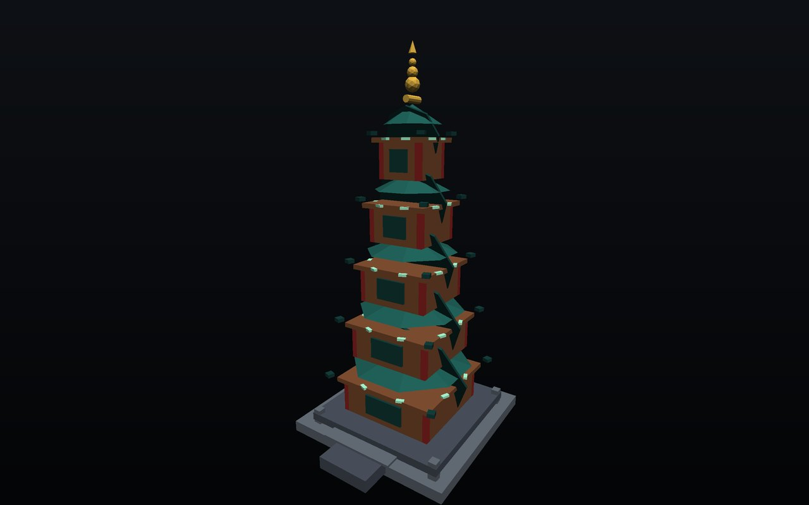

Python
主力3 熟练 / 1 了解- 工程与脚本开发熟练 92%
- 数据处理熟练 90%
- 工具链搭建熟练 85%
- 服务与接口了解 55%
Resume · 人工智能技术应用
能写前端界面，也能把后端与算法活儿接上。这份页面本身就是作品的一部分：3D 模型、点云、动效与排版全部手写，资源零外部依赖。
同一份目录里的两个 3D 档位：程序化建模的雕塑，以及由它的网格采样出的高斯喷溅点云。

当前环境无法启动实时渲染，已切换为静态渲染图。
A 档是真实扫描件（拖拽旋转 / 滚轮缩放）；B 档是从同一份扫描件表面采样出的照片色点云。
UPGRADE-SPLAT.md。
评级沿用原简历口径：熟练 为能独立完成并交付，了解 为能读懂、能改、能用起来。
五段经历，点击任意一条展开细节。
把来源不一、格式不齐的数据整理成可复用结构，重点在清洗规则、异常拦截和可重复执行的流程。
承担业务模块的设计与实现，关注职责拆分、接口组织和后续可维护性。
用 C++ 完成基础程序与算法实现，先保证正确性，再关注资源使用与结构清晰。
围绕「模型能解什么、工程怎么接」做的落地探索。
在同一批任务里组合多种语言与方向，按场景选型。
把剩下的信息压进一张栅格，不用再翻页。
在校期间以 Python / Java / C++ 为主线推进专业方向，并把课程任务往可运行、可演示的项目形态上做。
assets/photo.jpg，再打开下方那行注释即可